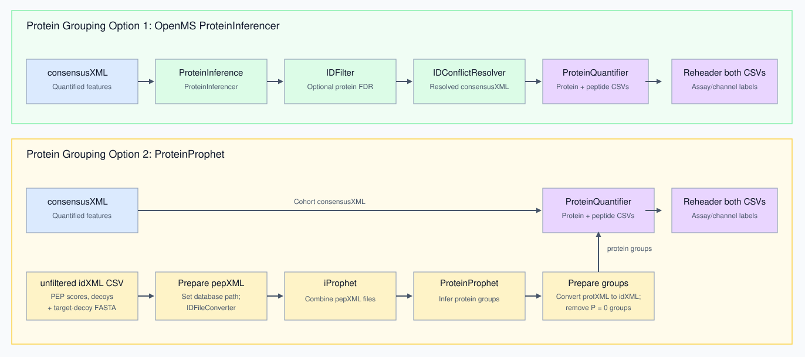

Workflows

OpenMS 3.6 ProteinQuantifier writes one protein abundance per (fraction_group, label) assay. Each assay combines its fractions with protein_quantifier_fractions_aggregate = 'sum' by default; technical replicates in separate fraction groups remain separate columns. Postprocessing reads the same OpenMS experimental design and labels protein and peptide abundance columns with their file identity, explicit sample name, or fraction-group ID, reporter channel, and optional channel description. It changes only headers and fails if an assay cannot be matched to the consensusXML.
- ProteinProphet (default): For each unfiltered, PEP-scored idXML, set its search database path to the supplied target-decoy FASTA, extract its OpenMS enzyme rule, convert it to pepXML, and repair the enzyme-terminus annotations. Combine the repaired pepXML files with iProphet; run ProteinProphet; convert protXML to idXML; remove groups whose probability is zero; and give the resulting groups to ProteinQuantifier.
- ProteinInferencer: Run OpenMS ProteinInference on the cohort consensusXML, optionally filter by protein FDR when both
protein_inference_protein_fdrandfilter_protein_fdrare true, then resolve identification conflicts and quantify.
The pipeline does not impose LFQ sample grouping or TMT plex logic. The input consensusXML must already contain compatible quantified features and sample metadata. ProteinProphet combines all provided unfiltered idXML files for cohort level grouping.